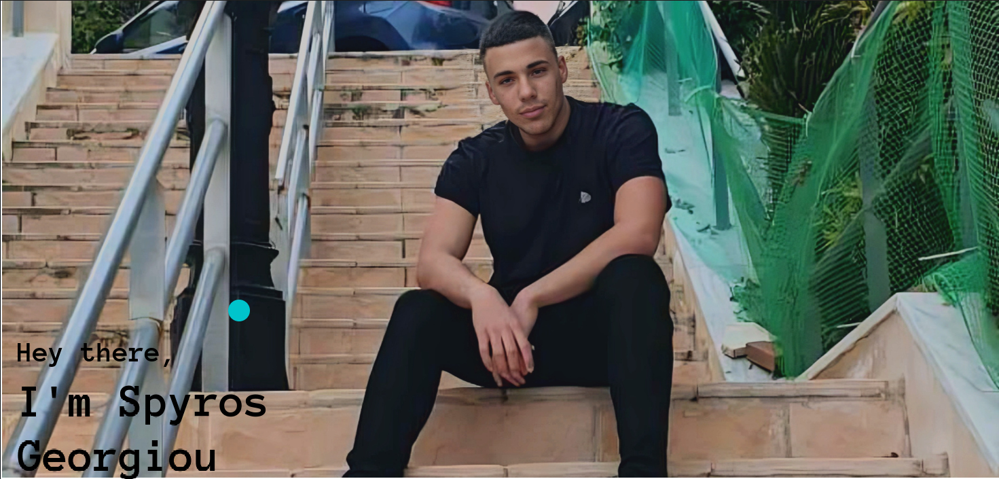

I am a computer science student
Some things about me
- I am currently in the second year of university in greece
- I choose this path because from a small age I was intrigued by the way computers work. How
could a piece of glass show all this information? How could I possibly be able to see the face
of a relative and hear his voice when he lives miles away? After destroying a few laptops at age
12 I slowly started to figure it out.
- I am hungry for knowledge. I always want to explore new technologies and use more tools, I don't aspire
to be a web developer but I am confident I can create a simple website to showcase my projects.
- I love working in team environments. It's the extra motivation I need for continuing and not fall behind.
because the last thing I want is to see the faces of people I have let down.
- I have good familiarity with Java C and python, working in vscode and Intelj IDEs
Some Personal Projects
As good as school projects are, they are outdated. So in order to stay up to date and use new technologies
I felt the need to do some work in the background.